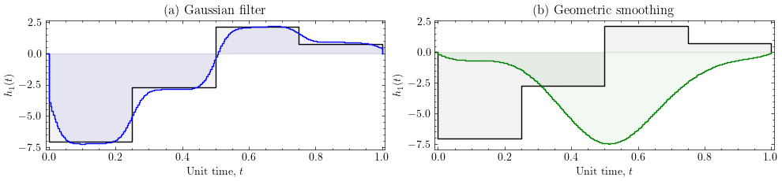
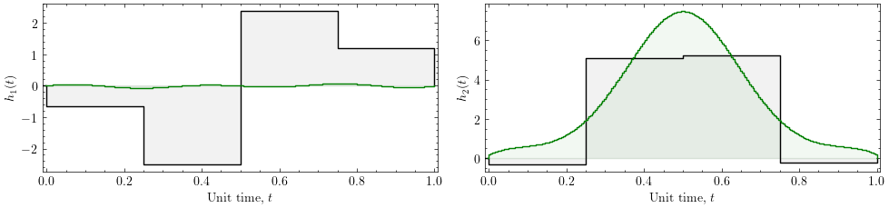

Pulse Smoothing with GEOPE¤
This notebook demonstrates how to use GEOPE (Geodesic Pulse Engineering) to synthesise piecewise-constant quantum control pulses and then smooth them using two different strategies:
- Geometric smoothing — iteratively projects parameter updates into the null space of the Jacobian so that fidelity is preserved while neighbouring pulse segments are brought closer together.
- Gaussian filtering — a simple signal-processing baseline that convolves the pulse with a Gaussian kernel, then re-optimises to recover lost fidelity.
We target the controlled-Z (CZ) gate on two qubits under an Ising-type Hamiltonian with time-dependent transverse-field controls.
Setup¤
Load the required libraries. GEOPE is built on JAX for automatic differentiation and JIT compilation. We also use SciPy for signal processing and Matplotlib (with the scienceplots style) for publication-quality figures.
import sys
sys.path.append("../")
from geope.geope import Geope
from geope.gecko import Gecko
from geope.parameters import Parameters
from geope.utils import History
from geope.utils import construct_full_pauli_basis, construct_restricted_pauli_basis, qft_unitary
import os
import jax.numpy as jnp
import jax
import numpy as np
import scipy.linalg as spla
import scipy.optimize as spo
import scipy.signal as sps
import re
import matplotlib.pyplot as plt
# Prefer the publication 'science' style when scienceplots is installed;
# otherwise fall back to matplotlib's default so the notebook runs anywhere.
try:
import scienceplots # noqa: F401
plt.style.use('science')
except Exception:
pass
fontsize_title=24
fontsize_label=26
fontsize_legend=18
fontsize_ticks=22
CZ with \(h_1(t)\) control¤
With Hamiltonian model: \(H = \sigma^z_1 \sigma^z_2 + h_1(t)\sigma^x_1\)
Solve with GEOPE and perform repeated Geometric smoothing steps (fewer steps would be sufficient)¤
We construct the CZ gate as a 2-qubit target unitary and set up the Lie algebra bases:
- Full basis — the complete 15-element Pauli basis for 2 qubits.
- Drift basis — the fixed \(\sigma^z_1 \sigma^z_2\) interaction that is always on.
- Projected (control) basis — only \(\sigma^x_1\), the single controllable field \(h_1(t)\).
Two Geope optimisers are created: one for geometric smoothing and one for the Gaussian filter comparison. The optimisation loop runs GEOPE for up to 6 rounds, doubling the number of piecewise-constant segments and applying geometric smoothing after each round until the pulse-difference cost drops below the tolerance.
nqubits = 2
# CZ up to single-qubit Z rotations, with the phases reached by the ZZ drift
# under U = exp(-iH).
target = np.array([[1,0,0,0],[0,-1.j,0,0],[0,0,-1.j,0],[0,0,0,1]])
gates = 4
basis = construct_full_pauli_basis(nqubits)
max_step_size = 0.1
drift = construct_restricted_pauli_basis(nqubits, ['zz'])
restriction = construct_restricted_pauli_basis(nqubits, {1: ['x']})
drift_parameters = [1.]
params = Parameters(basis=basis,
projected_basis=restriction,
drift_basis=drift,
drift_values=drift_parameters,
target=target,
piecewise_steps=gates,
init_spread=0.1)
opt_geope = Geope(params,
verbose=True,
history=History())
c=0
success = False
steps = []
while c < 6 and not success:
opt_geope.optimize(max_steps=100, max_step_size=max_step_size, gram_schmidt_step_size=1.2*max_step_size)
if c==0:
# Warm-start a second optimiser from the current solution for the
# Gaussian-filter comparison later on.
params_gf = Parameters(basis=basis,
projected_basis=restriction,
drift_basis=drift,
drift_values=drift_parameters,
target=target,
piecewise_steps=gates,
init_values=np.array(opt_geope.params.parameters))
opt_geope_gf = Geope(params_gf,
verbose=True,
history=History())
steps.append(opt_geope.history.steps[-1])
# Gecko works on phi, the pulse amplitude, and a subdivision halves delta_t
# while leaving phi alone. This rate and tolerance were tuned on rotation
# angles phi * delta_t; the smoothing step scales as rate / ||phi|| and the
# cost as ||phi||^2, so both carry 1 / delta_t**2 to stay equivalent.
dt_next = opt_geope.params.delta_t / 2
success, _ = Gecko(opt_geope.params).smooth(piecewise_steps_multiplier=2, smoothing_rate=0.001 / dt_next**2, max_smoothing_steps=500, diff_tol=0.00001 / dt_next**2)
steps.append(opt_geope.history.steps[-1])
c+=1
opt_geope.optimize(max_steps=100, max_step_size=max_step_size, gram_schmidt_step_size=1.2*max_step_size)
print("Finished optimising.")
[1/100] [Fidelity = 0.07571605665960135] Omega geodesic reduced the infidelity for this step...
[2/100] [Fidelity = 0.08106352939409289] Omega geodesic reduced the infidelity for this step...
[3/100] [Fidelity = 0.08744251419879367] Omega geodesic reduced the infidelity for this step...
[4/100] [Fidelity = 0.095000429213695] Omega geodesic reduced the infidelity for this step...
[5/100] [Fidelity = 0.10391606818678811] Omega geodesic reduced the infidelity for this step...
[6/100] [Fidelity = 0.11438925363888808] Omega geodesic reduced the infidelity for this step...
[7/100] [Fidelity = 0.12662758923566886] Omega geodesic reduced the infidelity for this step...
[8/100] [Fidelity = 0.14083297031865039] Omega geodesic reduced the infidelity for this step...
[9/100] [Fidelity = 0.15718930443739332] Omega geodesic reduced the infidelity for this step...
[10/100] [Fidelity = 0.17585140056244253] Omega geodesic reduced the infidelity for this step...
[11/100] [Fidelity = 0.19693415480001364] Omega geodesic reduced the infidelity for this step...
[12/100] [Fidelity = 0.220501204236196] Omega geodesic reduced the infidelity for this step...
[13/100] [Fidelity = 0.24655295249716125] Omega geodesic reduced the infidelity for this step...
[14/100] [Fidelity = 0.275015025768242] Omega geodesic reduced the infidelity for this step...
[15/100] [Fidelity = 0.30572945950938835] Omega geodesic reduced the infidelity for this step...
[16/100] [Fidelity = 0.33845171600721236] Omega geodesic reduced the infidelity for this step...
[17/100] [Fidelity = 0.37285633328927426] Omega geodesic reduced the infidelity for this step...
[18/100] [Fidelity = 0.4085522313004123] Omega geodesic reduced the infidelity for this step...
[19/100] [Fidelity = 0.44510589951961466] Omega geodesic reduced the infidelity for this step...
[20/100] [Fidelity = 0.4820681790455822] Omega geodesic reduced the infidelity for this step...
[21/100] [Fidelity = 0.5189995043639507] Omega geodesic reduced the infidelity for this step...
[22/100] [Fidelity = 0.5554896514093811] Omega geodesic reduced the infidelity for this step...
[23/100] [Fidelity = 0.5911703832536879] Omega geodesic reduced the infidelity for this step...
[24/100] [Fidelity = 0.625721596089992] Omega geodesic reduced the infidelity for this step...
[25/100] [Fidelity = 0.658872838108985] Omega geodesic reduced the infidelity for this step...
[26/100] [Fidelity = 0.6904023371547633] Omega geodesic reduced the infidelity for this step...
[27/100] [Fidelity = 0.7201352858446007] Omega geodesic reduced the infidelity for this step...
[28/100] [Fidelity = 0.7479424789943726] Omega geodesic reduced the infidelity for this step...
[29/100] [Fidelity = 0.7737397106710754] Omega geodesic reduced the infidelity for this step...
[30/100] [Fidelity = 0.7974877175978453] Omega geodesic reduced the infidelity for this step...
[31/100] [Fidelity = 0.819191962871886] Omega geodesic reduced the infidelity for this step...
[32/100] [Fidelity = 0.8389012792279746] Omega geodesic reduced the infidelity for this step...
[33/100] [Fidelity = 0.8567044462623733] Omega geodesic reduced the infidelity for this step...
[34/100] [Fidelity = 0.872724207436249] Omega geodesic reduced the infidelity for this step...
[35/100] [Fidelity = 0.8871089224454869] Omega geodesic reduced the infidelity for this step...
[36/100] [Fidelity = 0.9000227193266269] Omega geodesic reduced the infidelity for this step...
[37/100] [Fidelity = 0.9116353662773795] Omega geodesic reduced the infidelity for this step...
[38/100] [Fidelity = 0.9221130081107859] Omega geodesic reduced the infidelity for this step...
[39/100] [Fidelity = 0.9316105233771166] Omega geodesic reduced the infidelity for this step...
[40/100] [Fidelity = 0.9402657950557969] Omega geodesic reduced the infidelity for this step...
[41/100] [Fidelity = 0.9481958453841862] Omega geodesic reduced the infidelity for this step...
[42/100] [Fidelity = 0.9554946247456625] Omega geodesic reduced the infidelity for this step...
[43/100] [Fidelity = 0.9622322135104278] Omega geodesic reduced the infidelity for this step...
[44/100] [Fidelity = 0.968455207620806] Omega geodesic reduced the infidelity for this step...
[45/100] [Fidelity = 0.9741880588181672] Omega geodesic reduced the infidelity for this step...
[46/100] [Fidelity = 0.9794351241426358] Omega geodesic reduced the infidelity for this step...
[47/100] [Fidelity = 0.9841831691699781] Omega geodesic reduced the infidelity for this step...
[48/100] [Fidelity = 0.988404083674193] Omega geodesic reduced the infidelity for this step...
[49/100] [Fidelity = 0.9920576080700069] Omega geodesic reduced the infidelity for this step...
[50/100] [Fidelity = 0.99509392466919] Omega geodesic reduced the infidelity for this step...
[51/100] [Fidelity = 0.9974560341369635] Omega geodesic reduced the infidelity for this step...
[52/100] [Fidelity = 0.9990819344307351] Omega geodesic reduced the infidelity for this step...
[53/100] [Fidelity = 0.9999068970665134] Omega geodesic reduced the infidelity for this step...
[54/100] [Fidelity = 0.9999999896440778] A solution!
[1/100] [Fidelity = 0.9999999999999045] A solution!
[1/100] [Fidelity = 0.9999999999956912] A solution!
[1/100] [Fidelity = 0.9999999989514616] A solution!
[1/100] [Fidelity = 0.9999999689377541] A solution!
Finished optimising.
Gaussian filter¤
As an alternative to geometric smoothing, we apply a Gaussian filter (from scipy.ndimage) to the piecewise-constant pulse. The steps are:
- Subdivide the pulse into many fine segments (factor of 64).
- Pad each control channel with zeros, convolve with a Gaussian kernel (\(\sigma = 8\)), and trim.
- Replace the parameters with the smoothed version and re-evaluate the fidelity before and after filtering.
- Re-optimise with GEOPE to recover any fidelity lost from the filtering.
import scipy.ndimage as spnimag
factor = 64
# Subdivide to a fine grid (no smoothing iterations — just resample the pulse).
Gecko(opt_geope_gf.params).smooth(piecewise_steps_multiplier=factor, smoothing_rate=0.01, max_smoothing_steps=0, diff_tol=0.01)
# Gaussian-filter each controllable strength as an alternative smoothing.
before_params = np.array(opt_geope_gf.params.parameters)
sigma = 8
new_params = []
for i, strength in enumerate(opt_geope_gf.params.parameters.T):
if opt_geope_gf.params.basis.labels[i] in opt_geope_gf.params.projected_basis.labels:
strength = np.concatenate((np.zeros(5000), strength, np.zeros(5000)))
smoothed_strength = spnimag.gaussian_filter1d(strength, sigma=sigma)
new_params.append(smoothed_strength[5000:-5000])
else:
new_params.append(strength)
after_params = np.stack(new_params, axis=1)
# Fidelity before/after the Gaussian filter.
fid = opt_geope_gf.params.manifold.fidelity_at(opt_geope_gf.params.free(before_params))
print(f"Before: {fid}")
fid = opt_geope_gf.params.manifold.fidelity_at(opt_geope_gf.params.free(after_params))
print(f"After: {fid}")
# Adopt the Gaussian-smoothed pulse as the live state, then re-optimise.
opt_geope_gf.params.parameters = after_params
opt_geope_gf.params.fidelity = fid # keep the live fidelity describing the live pulse
opt_geope_gf.optimize(max_steps=100, max_step_size=max_step_size, gram_schmidt_step_size=1.2*max_step_size)
Before: 0.9999999896440749
After: 0.9959626911028926
[1/100] [Fidelity = 0.9998147874087034] Omega geodesic reduced the infidelity for this step...
[2/100] [Fidelity = 0.9999999992308773] A solution!
<geope.parameters.Parameters at 0x128d3f2d0>
Plot results¤
We compare the two smoothing strategies side-by-side. The left panel shows the original piecewise pulse (black) overlaid with the Gaussian-filtered result (blue). The right panel shows the same original pulse overlaid with the geometrically smoothed result (green). Both methods reduce high-frequency discontinuities, but geometric smoothing preserves fidelity by construction.
alpha=0.05
y_limits = [-1.5,8.5]
geometric_smoothing_colour='green'
gf_smoothing_colour='blue'
orig_scaling = opt_geope.history.parameters[steps[0]].shape[0]
smoothed_scaling = opt_geope.params.parameters.shape[0]
gf_scaling = opt_geope_gf.params.parameters.shape[0]
orig_gates = [float(i)/orig_scaling for i in range(-1, opt_geope.history.parameters[steps[0]].shape[0]+1)]
smoothed_gates = [float(i)/smoothed_scaling for i in range(-1, opt_geope.params.parameters.shape[0]+1)]
gf_gates = [float(i)/gf_scaling for i in range(-1, opt_geope_gf.params.parameters.shape[0]+1)]
# phi is the field amplitude over segments of length delta_t; on the unit-time
# axis t = tau / total_time the field is phi * total_time, which subdivision
# leaves unchanged, so one factor serves every pulse below.
amplitude_scale = opt_geope.params.total_time
fig, axs = plt.subplots(1, 2, figsize=(10, 2.5), sharex=True)
for i, strength in enumerate(opt_geope.history.parameters[steps[0]].T):
strength = [s*amplitude_scale for s in strength]
if opt_geope.params.basis.labels[i] in opt_geope.params.projected_basis.labels:
axs[0].step(orig_gates,
np.append(np.array([0]), np.append(strength,np.array([0]))),
where='post',
label=opt_geope.params.basis.plot_labels[i],
color='black')
axs[0].fill_between(orig_gates,
np.append(np.array([0]), np.append(strength,np.array([0]))),
step='post',
color='black',
alpha=0.05)
for i, strength in enumerate(opt_geope_gf.params.parameters.T):
strength = [s*amplitude_scale for s in strength]
if opt_geope_gf.params.basis.labels[i] in opt_geope_gf.params.projected_basis.labels:
axs[0].step(gf_gates,
np.append(np.array([0]), np.append(strength,np.array([0]))),
where='post',
label=opt_geope_gf.params.basis.plot_labels[i],
color=gf_smoothing_colour)
axs[0].fill_between(gf_gates,
np.append(np.array([0]), np.append(strength,np.array([0]))),
step='post',
color=gf_smoothing_colour,
alpha=alpha)
for i, strength in enumerate(opt_geope.history.parameters[steps[0]].T):
strength = [s*amplitude_scale for s in strength]
if opt_geope.params.basis.labels[i] in opt_geope.params.projected_basis.labels:
axs[1].step(orig_gates,
np.append(np.array([0]), np.append(strength,np.array([0]))),
where='post',
label=opt_geope.params.basis.plot_labels[i],
color='black')
axs[1].fill_between(orig_gates,
np.append(np.array([0]), np.append(strength,np.array([0]))),
step='post',
color='black',
alpha=0.05)
for i, strength in enumerate(opt_geope.params.parameters.T):
strength = [s*amplitude_scale for s in strength]
if opt_geope.params.basis.labels[i] in opt_geope.params.projected_basis.labels:
axs[1].step(smoothed_gates,
np.append(np.array([0]), np.append(strength,np.array([0]))),
where='post',
label=opt_geope.params.basis.plot_labels[i],
color=geometric_smoothing_colour)
axs[1].fill_between(smoothed_gates,
np.append(np.array([0]), np.append(strength,np.array([0]))),
step='post',
color=geometric_smoothing_colour,
alpha=alpha)
for ax in axs:
# ax.legend(loc='upper right')
ax.grid(False)
ax.set_xlim(-0.01,smoothed_gates[-1]+0.008)
# ax.set_ylim(y_limits[0],y_limits[1])
axs[0].set_title(f"(a) Gaussian filter")
axs[1].set_title(f"(b) Geometric smoothing")
axs[0].set_xlabel("Unit time, $t$")
axs[1].set_xlabel("Unit time, $t$")
axs[0].set_ylabel(f"$h_1(t)$")
axs[1].set_ylabel(f"$h_1(t)$")
plt.tight_layout()
plt.show()

CZ with \(h_1(t)\) and \(h_2(t)\) control¤
With Hamiltonian model: \(H = \sigma^z_1 \sigma^z_2 + h_1(t)\sigma^x_1 + h_2(t)\sigma^x_2\)
Solve with GEOPE and then repeated geometric smoothing¤
We now repeat the experiment with two independent controls, \(h_1(t)\sigma^x_1\) and \(h_2(t)\sigma^x_2\), while keeping the same \(\sigma^z_1\sigma^z_2\) drift. Having more control degrees of freedom generally makes the optimisation landscape more favourable for convergence.
nqubits = 2
# CZ up to single-qubit Z rotations, with the phases reached by the ZZ drift
# under U = exp(-iH).
target = np.array([[1,0,0,0],[0,-1.j,0,0],[0,0,-1.j,0],[0,0,0,1]])
gates = 4
basis = construct_full_pauli_basis(nqubits)
max_step_size = 0.1
drift = construct_restricted_pauli_basis(nqubits, ['zz'])
restriction = construct_restricted_pauli_basis(nqubits, {1: ['x'], 2: ['x']})
drift_parameters = [1.]
params = Parameters(basis=basis,
projected_basis=restriction,
drift_basis=drift,
drift_values=drift_parameters,
target=target,
piecewise_steps=gates,
init_spread=0.01)
opt = Geope(params,
verbose=True,
history=History())
c=0
success = False
steps_2 = []
while c < 6 and not success:
opt.optimize(max_steps=100, max_step_size=max_step_size, gram_schmidt_step_size=1.2*max_step_size)
# Gecko works on phi, the pulse amplitude, and a subdivision halves delta_t
# while leaving phi alone. This rate and tolerance were tuned on rotation
# angles phi * delta_t; the smoothing step scales as rate / ||phi|| and the
# cost as ||phi||^2, so both carry 1 / delta_t**2 to stay equivalent.
dt_next = opt.params.delta_t / 2
success, _ = Gecko(opt.params).smooth(piecewise_steps_multiplier=2, smoothing_rate=0.001 / dt_next**2, max_smoothing_steps=500, diff_tol=0.00001 / dt_next**2)
steps_2.append(opt.history.steps[-1])
c+=1
opt.optimize(max_steps=100, max_step_size=max_step_size, gram_schmidt_step_size=1.2*max_step_size)
print("Finished optimising.")
[1/100] [Fidelity = 0.07474224596709167] Omega geodesic reduced the infidelity for this step...
[2/100] [Fidelity = 0.07893769925452698] Omega geodesic reduced the infidelity for this step...
[3/100] [Fidelity = 0.08572989574323486] Omega geodesic reduced the infidelity for this step...
[4/100] [Fidelity = 0.09514272480650177] Omega geodesic reduced the infidelity for this step...
[5/100] [Fidelity = 0.10716479992229755] Omega geodesic reduced the infidelity for this step...
[6/100] [Fidelity = 0.12176444479081217] Omega geodesic reduced the infidelity for this step...
[7/100] [Fidelity = 0.13889263407109742] Omega geodesic reduced the infidelity for this step...
[8/100] [Fidelity = 0.15848282552487247] Omega geodesic reduced the infidelity for this step...
[9/100] [Fidelity = 0.18044970967517138] Omega geodesic reduced the infidelity for this step...
[10/100] [Fidelity = 0.20468761107260325] Omega geodesic reduced the infidelity for this step...
[11/100] [Fidelity = 0.23106893361185754] Omega geodesic reduced the infidelity for this step...
[12/100] [Fidelity = 0.25944293219215053] Omega geodesic reduced the infidelity for this step...
[13/100] [Fidelity = 0.2896350461565209] Omega geodesic reduced the infidelity for this step...
[14/100] [Fidelity = 0.32144699313740155] Omega geodesic reduced the infidelity for this step...
[15/100] [Fidelity = 0.35465777201041404] Omega geodesic reduced the infidelity for this step...
[16/100] [Fidelity = 0.38902564883519397] Omega geodesic reduced the infidelity for this step...
[17/100] [Fidelity = 0.4242910982055903] Omega geodesic reduced the infidelity for this step...
[18/100] [Fidelity = 0.46018055605299524] Omega geodesic reduced the infidelity for this step...
[19/100] [Fidelity = 0.4964107350359579] Omega geodesic reduced the infidelity for this step...
[20/100] [Fidelity = 0.5326931951963971] Omega geodesic reduced the infidelity for this step...
[21/100] [Fidelity = 0.5687388801551319] Omega geodesic reduced the infidelity for this step...
[22/100] [Fidelity = 0.6042624311592533] Omega geodesic reduced the infidelity for this step...
[23/100] [Fidelity = 0.6389862571342895] Omega geodesic reduced the infidelity for this step...
[24/100] [Fidelity = 0.6726445243104756] Omega geodesic reduced the infidelity for this step...
[25/100] [Fidelity = 0.7049873807415017] Omega geodesic reduced the infidelity for this step...
[26/100] [Fidelity = 0.7357857997735961] Omega geodesic reduced the infidelity for this step...
[27/100] [Fidelity = 0.7648373704517495] Omega geodesic reduced the infidelity for this step...
[28/100] [Fidelity = 0.7919731455182683] Omega geodesic reduced the infidelity for this step...
[29/100] [Fidelity = 0.8170652550460193] Omega geodesic reduced the infidelity for this step...
[30/100] [Fidelity = 0.8400344282353005] Omega geodesic reduced the infidelity for this step...
[31/100] [Fidelity = 0.860855966021947] Omega geodesic reduced the infidelity for this step...
[32/100] [Fidelity = 0.8795623450512987] Omega geodesic reduced the infidelity for this step...
[33/100] [Fidelity = 0.8962408472854468] Omega geodesic reduced the infidelity for this step...
[34/100] [Fidelity = 0.9110255638153663] Omega geodesic reduced the infidelity for this step...
[35/100] [Fidelity = 0.9240845535117267] Omega geodesic reduced the infidelity for this step...
[36/100] [Fidelity = 0.9356041931061985] Omega geodesic reduced the infidelity for this step...
[37/100] [Fidelity = 0.9457732304711718] Omega geodesic reduced the infidelity for this step...
[38/100] [Fidelity = 0.9547686718317735] Omega geodesic reduced the infidelity for this step...
[39/100] [Fidelity = 0.9627448551947009] Omega geodesic reduced the infidelity for this step...
[40/100] [Fidelity = 0.9698263822223238] Omega geodesic reduced the infidelity for this step...
[41/100] [Fidelity = 0.9761050914577077] Omega geodesic reduced the infidelity for this step...
[42/100] [Fidelity = 0.9816407605761015] Omega geodesic reduced the infidelity for this step...
[43/100] [Fidelity = 0.9864646863039079] Omega geodesic reduced the infidelity for this step...
[44/100] [Fidelity = 0.9905849486405323] Omega geodesic reduced the infidelity for this step...
[45/100] [Fidelity = 0.9939922158354794] Omega geodesic reduced the infidelity for this step...
[46/100] [Fidelity = 0.996665303316398] Omega geodesic reduced the infidelity for this step...
[47/100] [Fidelity = 0.998576133681158] Omega geodesic reduced the infidelity for this step...
[48/100] [Fidelity = 0.999694138520956] Omega geodesic reduced the infidelity for this step...
[49/100] [Fidelity = 0.9999998157254704] Omega geodesic reduced the infidelity for this step...
[50/100] [Fidelity = 0.9999999999989031] A solution!
[1/100] [Fidelity = 0.9999999999996128] A solution!
[1/100] [Fidelity = 0.9999999999346795] A solution!
[1/100] [Fidelity = 0.9999999955195533] A solution!
[1/100] [Fidelity = 0.9988450986269323] Omega geodesic reduced the infidelity for this step...
[2/100] [Fidelity = 0.9999613356091018] Omega geodesic reduced the infidelity for this step...
[3/100] [Fidelity = 0.9999999997506664] A solution!
Finished optimising.
Plot¤
Each subplot shows one control channel. The black step function is the initial (unsmoothed) pulse; the green step function is the geometrically smoothed result. Both panels share the same time axis.
alpha = 0.05
y_limits = [-8.5,3]
init_step = steps_2[0]
smoothed_step = -1
init_scaling = opt.history.parameters[init_step].shape[0]
smoothed_scaling = opt.history.parameters[smoothed_step].shape[0]
gates = [float(i)/init_scaling for i in range(-1,opt.history.parameters[init_step].shape[0]+1)]
smoothed_gates = [float(i)/smoothed_scaling for i in range(-1,opt.history.parameters[smoothed_step].shape[0]+1)]
# phi is the field amplitude over segments of length delta_t; on the unit-time
# axis t = tau / total_time the field is phi * total_time, which subdivision
# leaves unchanged, so one factor serves every pulse below.
amplitude_scale = opt.params.total_time
fig, axs = plt.subplots(1, 2, figsize=(10, 2.5), sharex=True)
a=0
for i, strength in enumerate(opt.history.parameters[init_step].T):
strength = [s*amplitude_scale for s in strength]
if opt.params.basis.labels[i] in opt.params.projected_basis.labels:
axs[a].step(gates,
np.append(np.array([0]), np.append(strength,np.array([0]))),
where='post',
label=opt.params.basis.plot_labels[i],
color="black")
axs[a].fill_between(gates,
np.append(np.array([0]), np.append(strength,np.array([0]))),
step='post',
color="black",
alpha=alpha)
a+=1
a=0
for i, strength in enumerate(opt.history.parameters[smoothed_step].T):
strength = [s*amplitude_scale for s in strength]
if opt.params.basis.labels[i] in opt.params.projected_basis.labels:
axs[a].step(smoothed_gates,
np.append(np.array([0]), np.append(strength,np.array([0]))),
where='post',
label=opt.params.basis.plot_labels[i],
color="green")
axs[a].fill_between(smoothed_gates,
np.append(np.array([0]), np.append(strength,np.array([0]))),
step='post',
color="green",
alpha=alpha)
a+=1
for ax in axs:
# ax.legend(loc='upper right')
ax.grid(False)
ax.set_xlim(-0.01,gates[-1]+0.008)
# ax.set_ylim(y_limits[0],y_limits[1])
axs[0].set_xlabel("Unit time, $t$")
axs[1].set_xlabel("Unit time, $t$")
axs[0].set_ylabel(f"$h_{{1}}(t)$")
axs[1].set_ylabel(f"$h_{{2}}(t)$")
plt.tight_layout()
plt.show()
